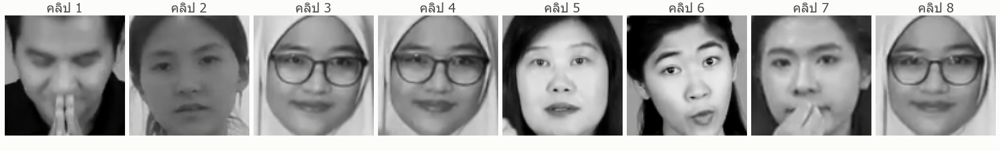
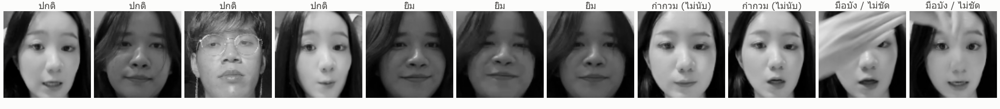
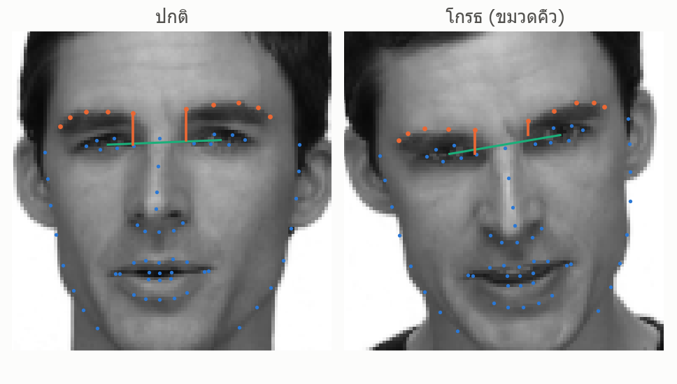
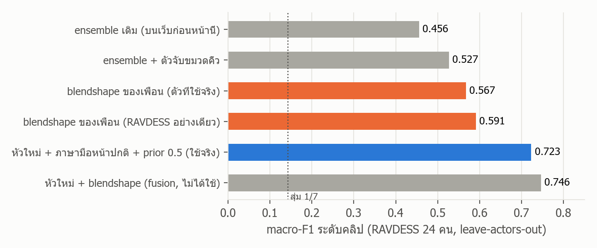
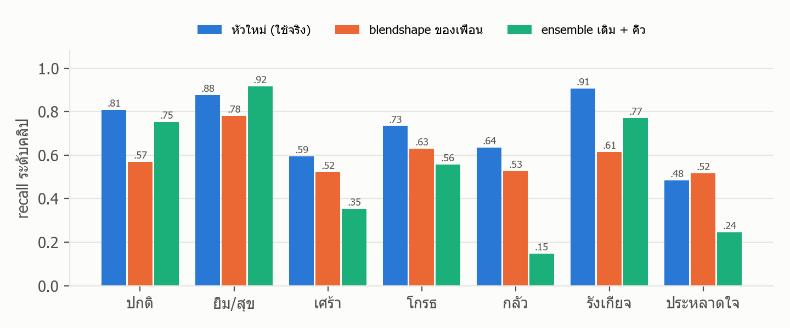
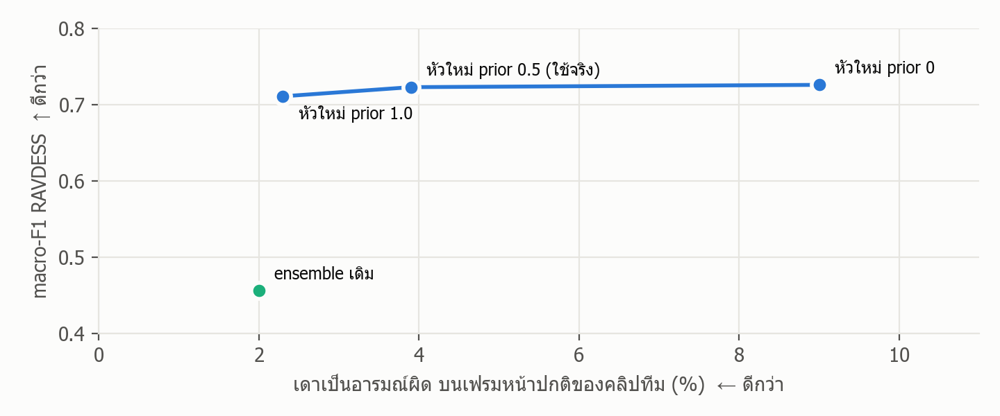

models/face-model-ravhead-v1 · code modules/face_fer.py · ต่อจาก face-report-v1fit_lr เดียวกับของเพื่อน, L2 0.1 เลือกจาก grid ด้วยกฎเดียวกัน)data_test/jack_test,
ตัดโฟลเดอร์คำที่มีความรู้สึกออก) วิธีเดียวกับที่เพื่อนใช้ 720 ตัวอย่าง คลิปของทีมไม่ได้ใช้เทรน เก็บไว้ทดสอบอย่างเดียว| ชุดข้อมูล | ใช้ทำอะไร | จำนวน | ป้าย |
|---|---|---|---|
| RAVDESS (วิดีโอพูด, นักแสดง 24 คน) | เทรน + ทดสอบ (leave-actors-out) | 1,440 คลิป → 4,630 ตัวอย่าง (คลิป + หน้าต่าง 2 วิ) · ภาพหน้า 27,145 ภาพ | ปกติ 288 (รวม calm), อารมณ์อื่นอย่างละ 192 |
คลิปท่าพจนานุกรม (data_test/jack_test) | เทรน (หน้าปกติขณะทำภาษามือ) | 53 คลิป → ภาพหน้า 653 ภาพ → 120 ตัวอย่าง | ปกติทั้งหมด |
| คลิปของทีม (Boom, Jack, Pitty) | ทดสอบอย่างเดียว | 18 คลิป → 356 เฟรม (ทุก 0.5 วิ) | ตัดสินด้วยตา: ปกติ 256 · ยิ้ม 3 · กำกวม 55 · มือบัง/ไม่ชัด 42 |
ทุกภาพคือสิ่งที่โมเดลเห็นจริง: ครอปหน้าสีเทา 96×96 px จากกรอบที่คำนวณจาก 68 จุดของ MediaPipe (ตัวเดียวกับบนเว็บ)



สังเกตความต่าง: RAVDESS หน้าตรง แสงสตูดิโอ แสดงอารมณ์ชัด ส่วนคลิปของทีมเป็นเว็บแคม ยิ้มบางๆ ปากขยับตามคำ และมือบังหน้า นี่คือสาเหตุหลักที่คะแนนบนการใช้งานจริงต่ำกว่าบน RAVDESS

68 จุดบนหน้า (ฟ้า) และสิ่งที่ตัวจับขมวดคิ้ววัด: ความสูงของคิ้วด้านใน (ส้ม) เหนือแนวตา (เขียว) หารด้วยระยะห่างตา ตอนโกรธเส้นส้มสั้นลงชัดเจน ตัวจับเทียบกับคิ้วตอนพักของคนนั้นเอง จึงไม่ขึ้นกับรูปหน้าแต่ละคน
actors[i::6]) ทุกโมเดลที่เทรนได้คะแนนจากนักแสดงที่ไม่เคยเห็นเท่านั้น; ensemble ไม่ได้เทรนบน RAVDESS เลย| โมเดล | accuracy คลิป | macro-F1 คลิป | macro-F1 หน้าต่าง 2 วิ | acc ระดับเข้ม | ปกติ vs มีอารมณ์ | บวก/ลบ ตรง |
|---|---|---|---|---|---|---|
| ensemble เดิม (v2-ferplus + HSEmotion B2, ไม่ได้เทรนบน RAVDESS) | 0.500 | 0.456 | 0.452 | 0.522 | 0.592 | 0.566 |
| ensemble + ตัวจับขมวดคิ้ว | 0.549 | 0.527 | 0.509 | 0.591 | 0.699 | 0.655 |
| blendshape ของเพื่อน, ตัวที่ใช้จริง (+720 ภาษามือหน้าปกติ) a | 0.564 | 0.567 | 0.554 | 0.631 | 0.812 | 0.685 |
| blendshape ของเพื่อน, RAVDESS อย่างเดียว (รันซ้ำ) | 0.592 | 0.591 | 0.578 | 0.664 | 0.853 | 0.719 |
| หัวใหม่, RAVDESS อย่างเดียว | 0.728 | 0.727 | 0.708 | 0.775 | 0.885 | 0.805 |
| หัวใหม่ + ภาษามือหน้าปกติ | 0.728 | 0.726 | 0.708 | 0.772 | 0.882 | 0.802 |
| หัวใหม่ + ภาษามือหน้าปกติ + prior 0.5 (ใช้บนเว็บ) | 0.726 | 0.723 | 0.705 | 0.786 | 0.874 | 0.799 |
| หัวใหม่ + ภาษามือหน้าปกติ + prior 1.0 | 0.713 | 0.711 | 0.695 | 0.780 | 0.858 | 0.784 |
| fusion: หัวใหม่ + blendshape (ไม่ได้ใช้) | 0.746 | 0.746 | 0.729 | 0.796 | 0.885 | 0.809 |
models/face-model/model_card.json (CV ของเพื่อนเอง, วิธีเดียวกัน, temperature 1.6) ·
fusion ต้องดึง blendshape เพิ่มบนเว็บ ได้เพิ่มเพียง ~0.02 จึงไม่ใช้
| โมเดล | ปกติ | สุข | เศร้า | โกรธ | กลัว | รังเกียจ | ประหลาดใจ |
|---|---|---|---|---|---|---|---|
| ensemble เดิม | 0.86 | 0.92 | 0.35 | 0.06 | 0.14 | 0.77 | 0.22 |
| ensemble + คิ้ว | 0.75 | 0.92 | 0.35 | 0.56 | 0.15 | 0.77 | 0.24 |
| blendshape ของเพื่อน (RAVDESS อย่างเดียว) | 0.57 | 0.78 | 0.52 | 0.63 | 0.53 | 0.61 | 0.52 |
| หัวใหม่ (ใช้บนเว็บ) | 0.81 | 0.88 | 0.59 | 0.73 | 0.64 | 0.91 | 0.48 |

ไม่มีป้ายอารมณ์จริง จึงใช้ชุดเดียวกับรายงาน v1 (real_check.py): ตัดสินด้วยตาว่าเป็นหน้าปกติ 256 เฟรม, ยิ้มชัด 3 เฟรม (ยิ้มบางๆ)
วัดว่าป้ายที่จะขึ้นบนจอ (ผ่าน unknown rule + smoother ส่งทีละภาพแบบเว็บจริง) ขึ้นอารมณ์ผิดบนหน้าปกติบ่อยแค่ไหน
| โมเดล (ผ่าน unknown rule + smoother แบบบนเว็บ) | ขึ้นหน้าปกติ | ขึ้นอารมณ์ผิด ↓ | ไม่แน่ใจ | ยิ้มที่จับได้ | ผิดเป็นอะไร |
|---|---|---|---|---|---|
| v1 EfficientNet-B0 + prior 0.6 (รายงาน v1) | 82.0% | 6.6% | 11.3% | 2/3 | |
| ensemble เดิม (บนเว็บก่อนหน้านี้) | 97.7% | 2.0% | 0.4% | 2/3 | ยิ้ม 5 |
| หัวใหม่ prior 0 | 87.9% | 9.0% | 3.1% | 0/3 | เศร้า 23 |
| หัวใหม่ prior 0.5 (ใช้บนเว็บ) | 93.8% | 3.9% | 2.3% | 0/3 | เศร้า 10 |
| หัวใหม่ prior 1.0 | 97.7% | 2.3% | 0.0% | 0/3 | เศร้า 6 |

prior หน้าปกติบนหัวใหม่: 0 → 0.5 ลดการขึ้นอารมณ์ผิดจาก 9.0% เป็น 3.9%
โดย F1 แทบไม่ลด (0.726 → 0.723); 1.0 ได้ 2.3% ใกล้ ensemble เดิม
แต่ F1 ลดเป็น 0.711 และจับเศร้า/โกรธได้น้อยลง เลือก 0.5 · เปลี่ยนได้ที่ head.prior_shift ใน config.json แล้ว restart (ไม่ต้องเทรนหรือ build)
enet_b2_8_feat.onnx (B2 ที่คืนทั้ง logits และฟีเจอร์) เวลาเท่ากับ B2 เดิม: ~220–350 ms ต่อการเรียก 5 ภาพบน CPUcheck_ravhead.py)tests/test_face_branch.py ผ่าน 12/12 (เพิ่ม test หน้าต่างและ state ของหัว)| ไฟล์ | หน้าที่ |
|---|---|
Face-Lab/ravdess24.py | ดึง RAVDESS 24 คน (จุดหน้า, blendshape, ภาพหน้า) แล้วลบวิดีโอ |
Face-Lab/sign_neutral.py | ภาพหน้าปกติจากคลิปท่าพจนานุกรม |
Face-Lab/rav_head.py | เทรน/วัดหัวใหม่, blendshape ของเพื่อน, fusion |
Face-Lab/rav_prior.py · check_ravhead.py | ผลของ prior บน RAVDESS · ตรวจ bundle + คลิปทีมแบบเว็บ |
Face-Lab/ensemble24.py · compare24.py | ensemble เดิม (± คิ้ว) บน 24 คน |
Face-Lab/make_data_figures.py | ภาพตัวอย่างข้อมูลและจำนวน (results/data_summary.json) |
Face-Lab/make_figures_v2.py · make_report_v2.py | กราฟและรายงานนี้ (อ่านตัวเลขจาก results/*.json) |
modules/face_fer.py | PictureHead, BrowCue, กฎ wh ใน speech_affect |
รัน: docker compose -f docker-compose.yml -f docker-compose.cpu.yml up -d --build (ค่าตั้งต้นของ FACE_FER_DIR ชี้ models/face-model-ravhead-v1 แล้ว; ไฟล์ cpu สำหรับเครื่องที่ไม่มี GPU NVIDIA)